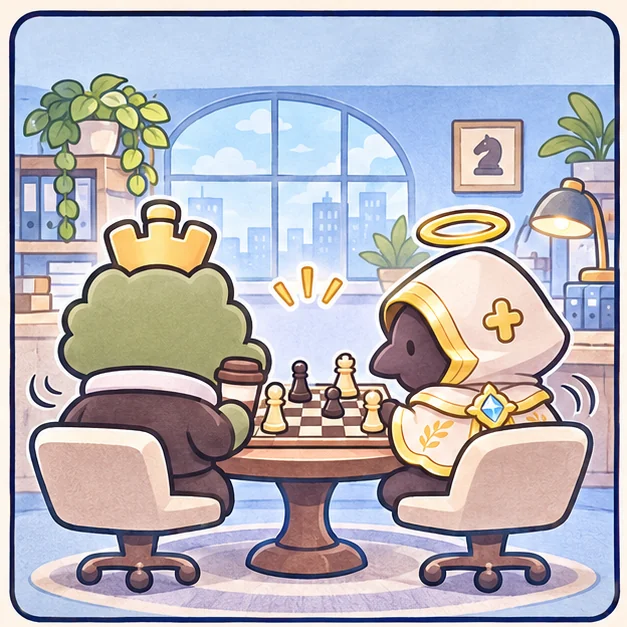
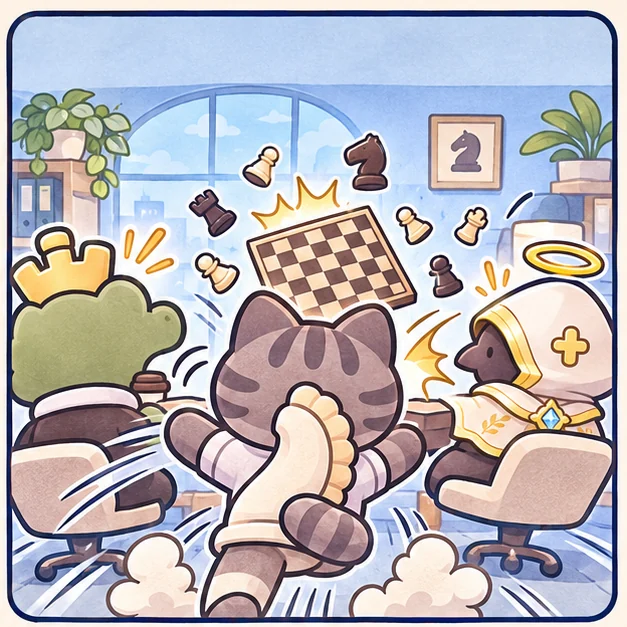
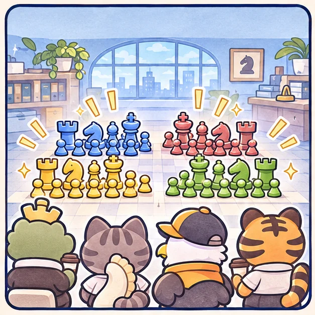
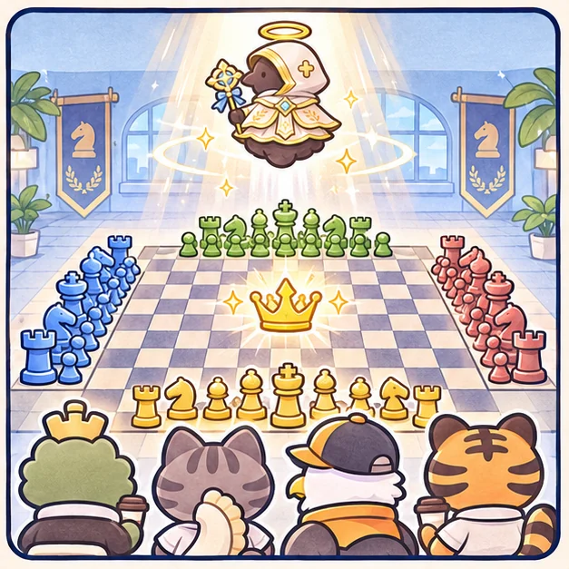

크다와 감 과장, 조용히 체스를 두던 중.
크다와 감 과장의 체스판을 기묘가 엎어버렸다!
기묘와 크다의 대결에 이글스 출신 이 대리와 호 사원이 합류한다. 감 과장은 아이템 가호로 등장한다.
11×11 게임판 · 4인 개인전 · 진영당 10개 말 · 중앙 왕 쟁탈

크다와 감 과장, 조용히 체스를 두던 중.

기묘가 갑자기 우다다! 체스판이 엎어졌다.

이 대리와 호 사원까지 합류해 네 진영이 맞선다.

중앙 왕을 사수하라! 감 과장은 하늘에서 가호를 내린다.
기묘·크다·이 대리·호 사원 중 내 캐릭터를 선택합니다. 나머지 세 캐릭터는 다른 진영에 무작위로 배정됩니다. 네 진영이 서로 독립적으로 싸웁니다. 각 진영은 폰 6개·나이트 3개·퀸 1개로 시작합니다. 중앙 왕은 폰으로만 차지할 수 있습니다.
AI 3명 또는 같은 기기 4인 대전을 즐길 수 있습니다. 온라인 매칭은 지원하지 않습니다.
기기를 다음 플레이어에게 넘기세요. 상대가 화면을 보지 않을 때 내 말을 확인하세요.